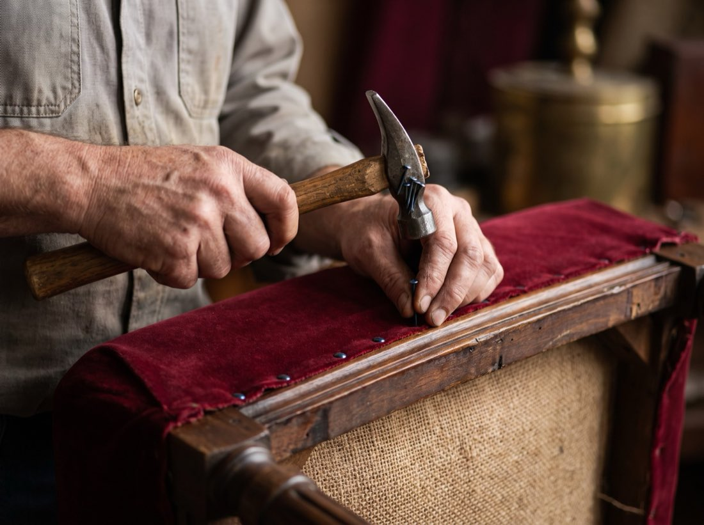
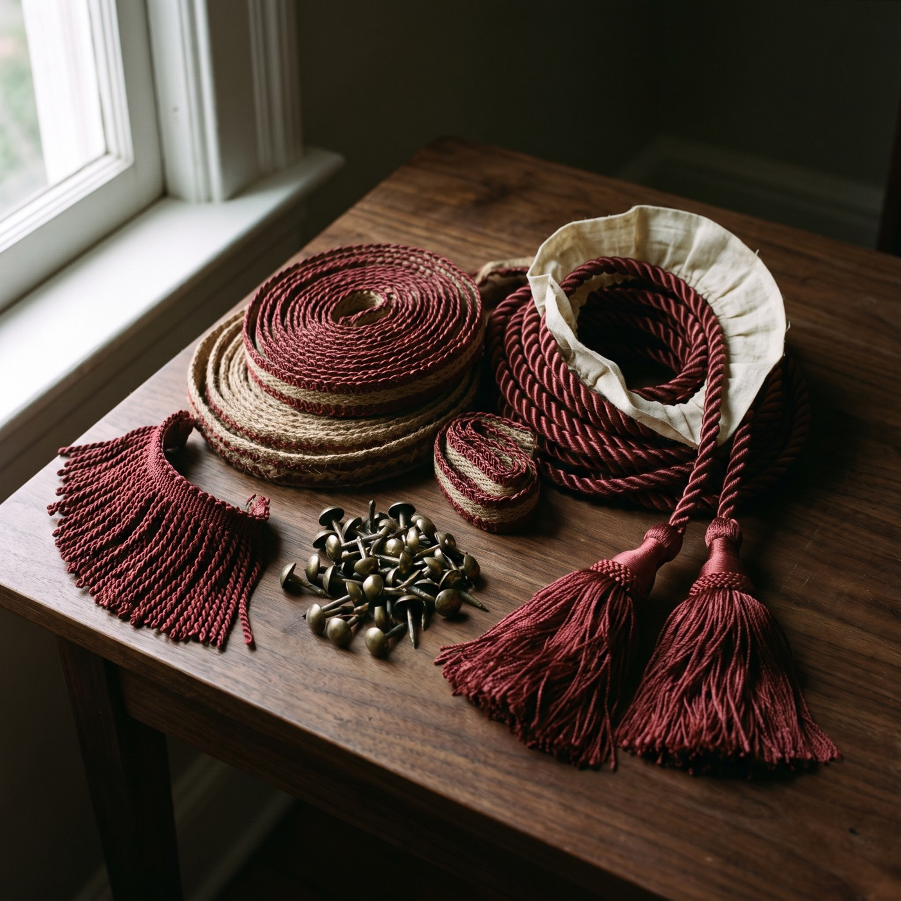

L’atelier de la rue Saint-Hubert
Trois générations de clients ont passé la porte de l’atelier. Le même métier, fait de la même façon, aujourd’hui au 7498, rue Saint-Hubert.
La rue Saint-Hubert a compté des tailleurs et des fourreurs par dizaines. La plupart de ces métiers ont disparu. Le rembourrage est resté, parce qu’un fauteuil bien bâti mérite d’être réparé et parce qu’il faut bien que quelqu’un sache le faire.
Tout se fait sur place : dégarnissage, réparation de structure, sangles, ressorts, bourrage, couture, cannage et finition du bois. Rien n’est envoyé ailleurs, et c’est pour ça que l’estimation tient et que le délai nous appartient.
Les clients arrivent avec un fauteuil de grand-mère, un sofa qui a tenu trente ans, ou douze banquettes de restaurant à remettre en service pour vendredi. Le travail est le même : ouvrir, regarder, et refaire les choses comme il faut.



Depuis 1955
Un métier exercé sans interruption, d’une génération de clients à la suivante.
Tout sous un même toit
Rembourrage, restauration d’antiquités, cannage, finition du bois, banquettes commerciales, cueillette et livraison.
Français et anglais
Au comptoir et au téléphone, dans la langue qui vous convient.
Estimation gratuite
Envoyez trois photographies et un chiffre écrit revient le jour ouvrable suivant.